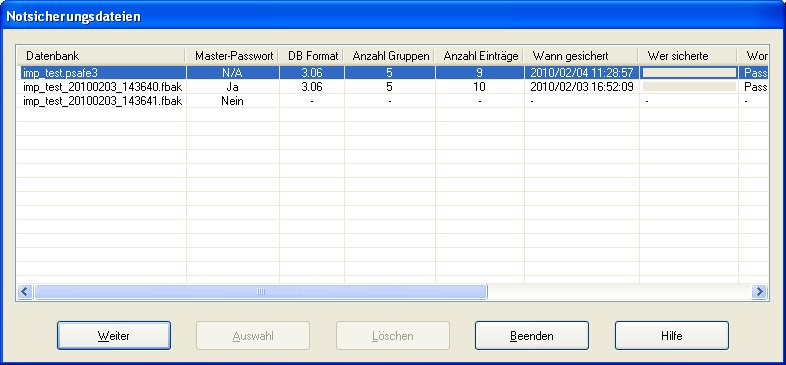

Wenn Password Safe normal beendet wird, werden Sie gefragt falls noch ungesicherte Einträge in der Datenbank bestehen. Wenn Sie sich aber von Windows abmelden, oder wenn Sie den PC Runterfahren oder Neu Starten hat Password Safe eventuell nicht die Chance Sie zu fragen (das genaue Verhalten hängt von der Art des Runterfahrens und der Windowsversion ab).
In diesem Fall wird Password Safe versuchen ein "Notsicherungsdatei" zu machen (mit der Erweiterung 'fbak'). Diese Notsicherungsdatei wird im selben Verzeichnis abgelegt wo sich die aktuell geöffnete Datenbank befindet. Die aktuell geöffnete Datenbank und die "normalen" Sicherungen sind von dieser Aktion nicht betroffen.
Wenn die ursprüngliche Datenbank wieder geöffnet wird, prüft Password Safe ab, ob eine Notsicherungsdatei besteht, um gegebenenfalls einen Dialog wie folgt anzuzeigen.
In der ersten Zeile steht die ausgewählte Datenbank mit einigen Informationen (diese werden auch im Punkt Eigenschaften vom Menü Datei angezeigt). Danach folgen die Notsicherungsdateien. Wenn diese Notsicherungsdateien mit demselben Master-Passwort wie die geöffnete Datenbank geöffnet werden können, werden auch deren Eigenschaften angezeigt. Wenn das Master-Passwort unterschiedlich ist oder die Datenbank nicht gültig ist, erscheint ein 'Nein' in der Spalte Master-Passwort. Es erscheinen auch keine Eigenschaften.
Hier die Auswahl:
Anregungen:
Anmerkung: Es gibt nichts was JEDWEDE Anwendung tun kann um Informationen abzuspeichern, wenn der PC einfach abgeschaltet wird, Strom verliert oder Prozessor, Festplatte oder irgendein Teil kaputt gehen. Sowie mit allen für Sie wichtigen Daten, sollten Sie regelmäßig Ihre Daten auf ein anderes Medium abspeichern. Dies könnte ein USB-Stick sein, externe Festplatten, Netzlaufwerke, CDs oder DVDs, usw. Diese Sicherungen sollten Sie an einem sicheren Platz aufheben.